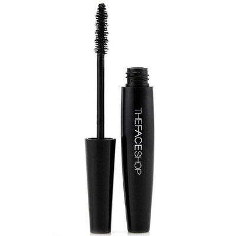

韩国正品菲诗小铺The Face Shop黑杆睫毛膏 纤长浓密防水彩妆

THE FACE SHOP这个牌子应该无人不知无人不晓了吧
他们家是年轻品牌的热门
很多设计好看又便宜的好东西
要说最值得买的肯定是他家的睫毛膏啦
是很多达人的入门睫毛膏啊
口碑无数
无论多少大牌出现
她的性价比和出众效果总让她在彩妆界占据一席之地
特点---1.拉长的效果明显，根根分明，不晕无渣，却很容易卸妆，用洗面奶洗两遍即可卸干净。
2.含有调和粉末的底膏营造丰盈睫毛，涂抹后睫毛卷曲、纤长。
01#是粗头，02#是细头，如果你刚学用睫毛膏，可以先用用粗头的，如果你想要浓密夸张的效果，可以用02#细头的，当然两支结合用的效果也是很好的拉。
使用方法：将睫毛刷慢慢地向上旋转取出。轻轻地刷上睫毛，从下方由睫毛根部向末梢部慢慢涂匀。将睫毛刷垂直立起，左右来回仔细地刷下睫毛。重复上色能更加突出睫毛色彩。